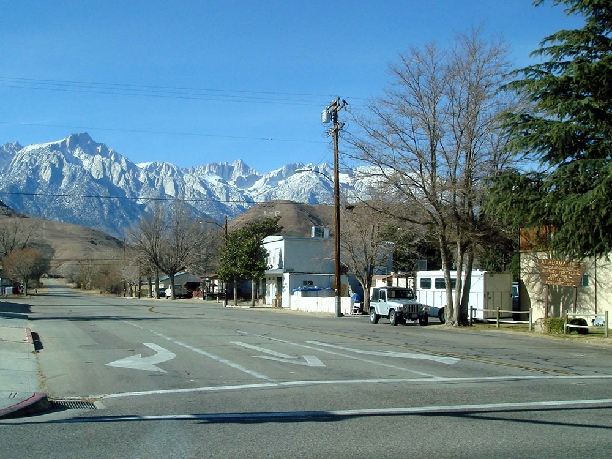
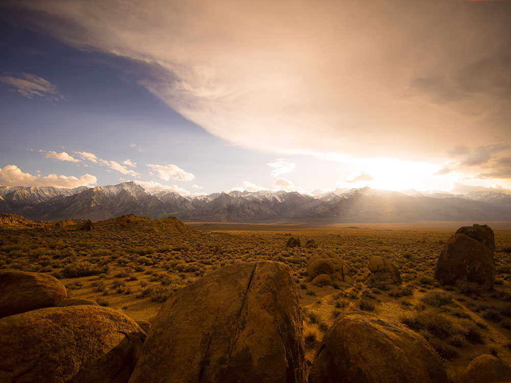
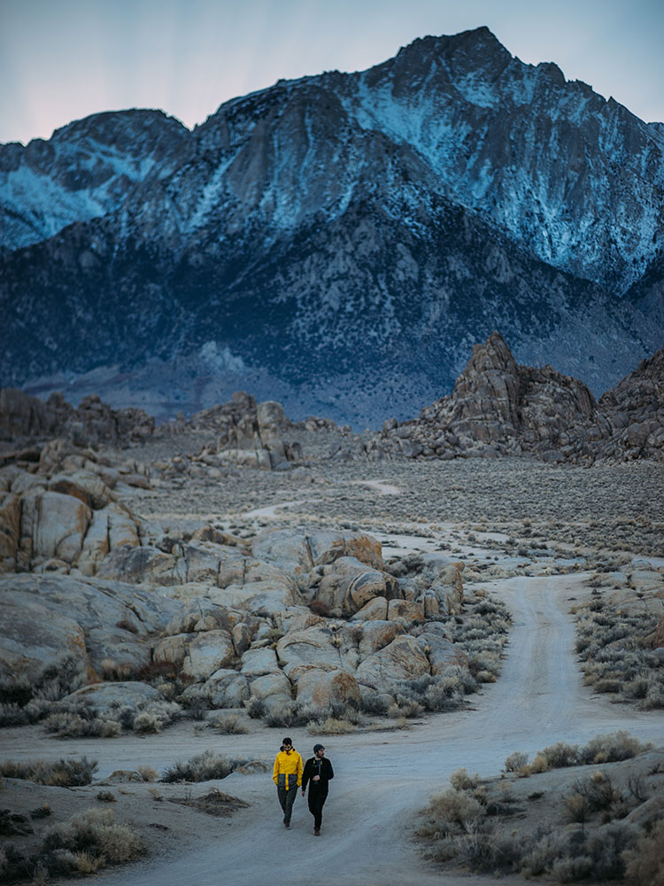
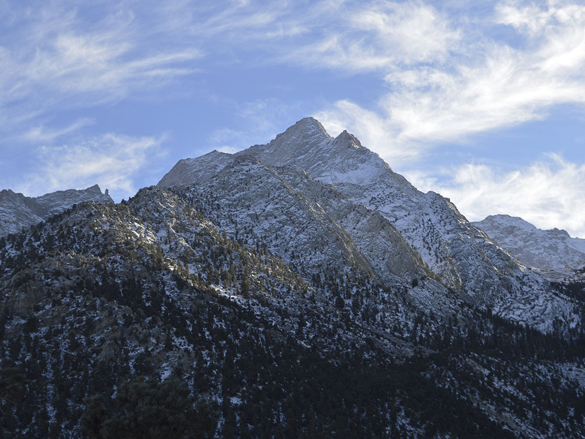

Community at an elevation of 3,727 feet, located in the Owens Valley, between the eastern peaks of the Sierra Nevada to the west and the Inyo Mountains to the east
How to Get There
From Las Vegas (232 mi): Get on I-515 N/US-95 N from N 4th St and Exit I-15 N. Follow US-95 N to NV-374 S/Main St in Beatty. Follow NV-374 S and Daylight Pass Rd to CA-190 W in Inyo County. Turn right onto CA-190 W. Continue straight onto CA-136 W. Turn right onto US-395 N/S Main St (signs for Bishop).
From Los Angeles (209 mi): Get on US-101 N from W Temple St. Take CA-14 N to US-395 N in Lone Pine.
Overview
Lone Pine is a small town of about 1,800 people in the Owens Valley of eastern California, along U.S. 395 at the foot of Mount Whitney, the tallest peak in the contiguous United States, and next to the rocky Alabama Hills. The jagged Sierra Nevada rises to the west and the Inyo Mountains to the east, and the dry valley between them is one of the most dramatic landscapes in the state.
Visitors come to Lone Pine to climb Mount Whitney, to explore the Alabama Hills and their arches, to see the sites of hundreds of movies, and as a gateway to Death Valley and Manzanar. Its small downtown has motels, restaurants and outfitters, and it serves as the main stop for hikers and travelers on the Eastern Sierra route.
History
The Paiute lived in the Owens Valley, and white settlers arrived in the 1860s, when the town grew as a supply point for the nearby silver mines. In 1872, a magnitude 7.4 earthquake, one of the strongest in California history, destroyed much of the town and killed 27 people. The Los Angeles Aqueduct, completed in 1913, drained Owens Lake and changed the valley's farming, and the Manzanar camp held Japanese Americans in World War II.
Sightseeing and Popular Landmarks
Mount Whitney (14,505 feet) and Whitney Portal Road, which leads to the trailhead, are the main sights. The Alabama Hills, with Mobius Arch and Movie Road, were the setting for many Westerns, and Manzanar National Historic Site, about ten miles north, tells the story of the wartime internment camp.
Culture and Museums
The Museum of Western Film History tells the story of the movies filmed here, and the Southern Inyo Museum covers local pioneer history. The Eastern Sierra Interagency Visitor Center is a good source of information, and the Lone Pine Film Festival each October celebrates the area's film heritage.
Parks
The Alabama Hills National Scenic Area has free camping, hiking and rock scrambling, and the Whitney Portal area has trails and waterfalls. The Inyo National Forest, the John Muir Wilderness and Death Valley National Park are nearby, and Diaz Lake offers fishing and picnicking just south of town.
Seasons and Weather
Lone Pine is at about 3,700 feet, with hot, dry summers when highs often reach 100°F and cold winters with highs in the 50s. It gets only about 6 inches of rain a year, spring and fall are the most pleasant seasons, and snow closes high-country trails from late fall to spring. Strong afternoon winds are common.
Things to Do
Experience the Gateway to Mount Whitney and the Alabama Hills
Lone Pine is a historic town in California's Owens Valley known for its dramatic mountain scenery, rich Western heritage, and easy access to some of the most iconic landscapes in the Eastern Sierra. Situated beneath the towering peaks of the Sierra Nevada, including Mount Whitney, the highest mountain in the contiguous United States, Lone Pine serves as a premier destination for outdoor recreation, photography, and scenic road trips.
Explore the Alabama Hills
The Alabama Hills are among Lone Pine's most famous attractions, featuring unique rock formations, natural arches, and spectacular views of the Sierra Nevada. The area has served as a filming location for hundreds of movies, television shows, and commercials and is a favorite destination for hiking, photography, and sightseeing.
Visit the Museum of Western Film History
Lone Pine has a long connection to Hollywood, and the Museum of Western Film History celebrates the many movies and television productions filmed in the region. Exhibits showcase film memorabilia, historic photographs, costumes, and the area's role in shaping the American Western genre.
Discover Mount Whitney and the Eastern Sierra
Lone Pine is the primary gateway to Mount Whitney and the surrounding wilderness areas. Visitors can enjoy scenic drives, day hikes, backpacking trips, camping, fishing, and some of the most impressive mountain scenery in California.
Drive the Whitney Portal Scenic Road
The winding road to Whitney Portal climbs from the Owens Valley into the Sierra Nevada, offering spectacular views of granite peaks, forested canyons, waterfalls, and alpine landscapes. Whitney Portal is also the trailhead for the famous Mount Whitney Trail.
Explore Nearby Manzanar National Historic Site
Located a short drive north of town, Manzanar National Historic Site preserves the history of Japanese American incarceration during World War II. The site features exhibits, reconstructed buildings, memorials, and educational programs that provide insight into an important chapter of American history.
Top Trails
Mobius Arch Loop Trail
Length: Approximately 0.6 miles loop
Elevation Gain: Minimal
Difficulty: Easy
This short and popular trail in the Alabama Hills leads to the famous Mobius Arch, one of the most photographed natural arches in California. The trail offers outstanding views of Mount Whitney framed by the arch.
Mount Whitney Trail
Length: Approximately 22 miles round trip
Elevation Gain: About 6,100 feet
Difficulty: Extremely Difficult
Beginning at Whitney Portal, this world-renowned trail climbs to the summit of Mount Whitney at 14,505 feet. The route passes alpine lakes, granite cliffs, and high-country scenery and requires permits for most access periods.
Lone Pine Lake Trail
Length: Approximately 6 miles round trip
Elevation Gain: About 1,800 feet
Difficulty: Moderate
This scenic trail follows the lower portion of the Mount Whitney Trail to Lone Pine Lake, offering beautiful mountain scenery without requiring a Mount Whitney permit for day hiking to the lake.
Little Whitney Meadow Trail
Length: Approximately 4 miles round trip
Elevation Gain: Moderate
Difficulty: Moderate
This quieter trail leads through forested areas and mountain meadows near Whitney Portal, providing opportunities for wildlife viewing, photography, and enjoying the natural beauty of the Sierra Nevada.
Sources: Inyo National Forest visitor information, including details on Mount Whitney, Whitney Portal, wilderness access, camping, hiking trails, and recreational opportunities near Lone Pine.
fs.usda.gov/inyo
Additional information verified through the Museum of Western Film History and Eastern Sierra visitor resources covering the Alabama Hills, Mobius Arch, Mount Whitney Trail, film history, scenic drives, and outdoor recreation opportunities in Lone Pine, California.
easternfilmhistory.org
This article uses material from Wikipedia as well as information from official tourism and institutional sources. Key references include Lone Pine Chamber of Commerce, Manzanar National Historic Site, Inyo National Forest, Museum of Western Film History, and National Weather Service Las Vegas. Wikipedia material is from the article "Lone Pine, California", released under the Creative Commons Attribution-Share-Alike License 3.0.
Featured Locations
Eastern Sierra Visitor Center
Facility offering interpretive exhibits, regional travel information, and panoramic views of surrounding natural landmarks.
Museum of Western Film History
Exhibition space dedicated to preserving and celebrating the legacy of Western cinema through memorabilia, film clips, and interpretive displays.



.jpg){kind=link}

.jpg){kind=link}
